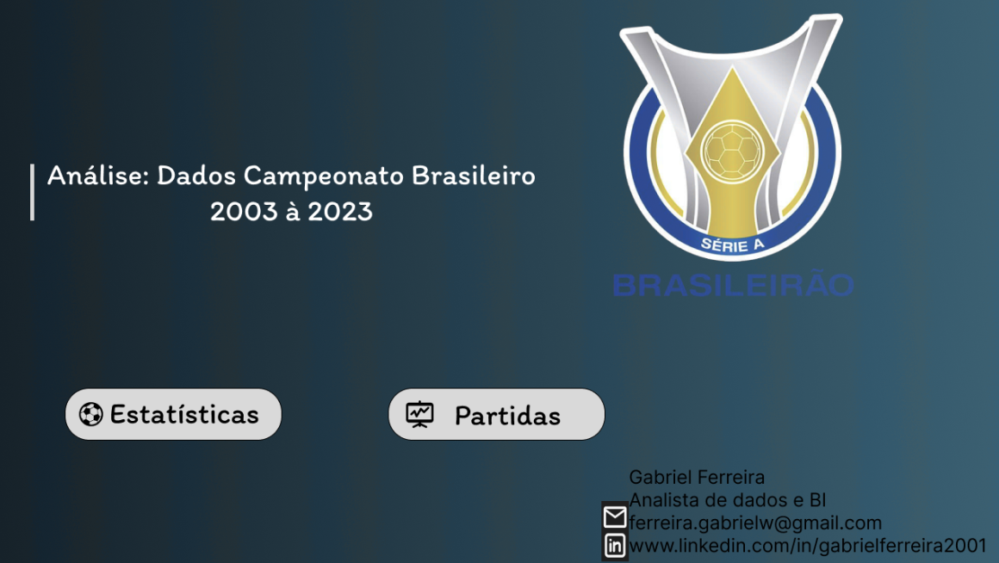
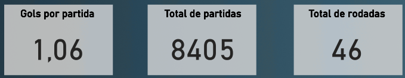
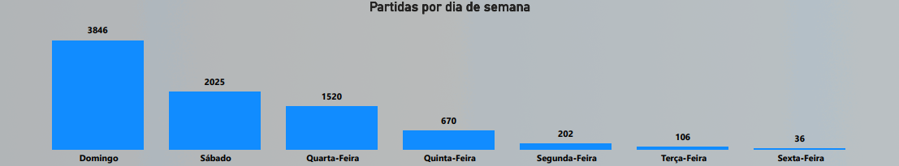
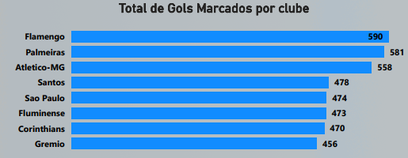
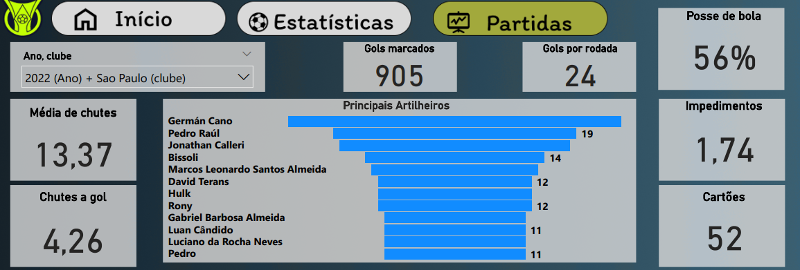
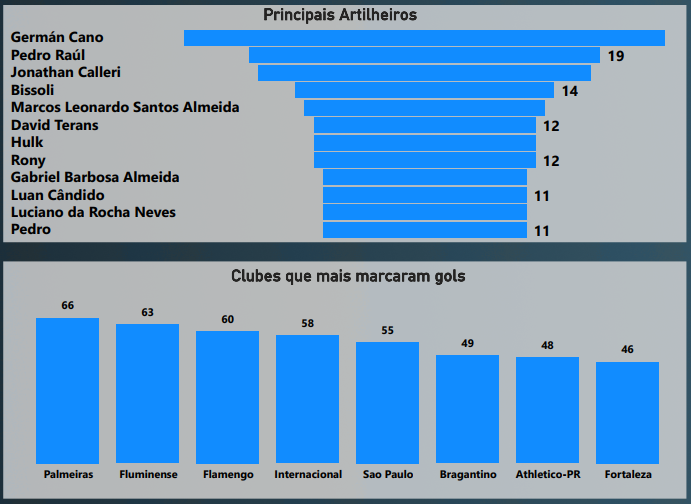

Projeto: Dashboard Campeonato Brasileiro - Análise de Estatísticas de Futebol
Introdução
Este projeto apresenta um Dashboard analítico com foco nas estatísticas do Campeonato Brasileiro de Futebol. O objetivo principal é fornecer uma visão abrangente e detalhada sobre o desempenho de equipes e jogadores, a dinâmica das partidas e tendências ao longo das temporadas. O dashboard visa capacitar analistas e entusiastas do futebol a explorar métricas chave como gols marcados, participação em partidas, artilharia, estatísticas de jogo (posse de bola, chutes, faltas) e comportamento de equipes, permitindo uma compreensão aprofundada do campeonato.
Estrutura do Projeto
O dashboard é organizado para oferecer diferentes perspectivas sobre os dados do Campeonato Brasileiro:
- Visão Geral do Campeonato: Indicadores agregados como gols por partida, total de partidas e total de rodadas.
- Dinâmica das Partidas: Análise da distribuição de jogos por dia da semana e o número total de gols marcados pelos principais clubes ao longo de várias temporadas.
- Desempenho por Temporada/Clube (Exemplo: 2022 - São Paulo): Detalhamento de estatísticas avançadas como posse de bola, média de chutes, chutes a gol, passes, impedimentos, faltas, escanteios, precisão de passes e cartões para um clube específico em uma temporada.
- Artilharia e Clubes Destaque na Temporada: Ranking dos principais artilheiros e o desempenho dos clubes que mais marcaram gols em uma temporada específica.
- Distribuição Geográfica de Resultados: Um mapa para visualizar a participação de estados.
Tecnologias Utilizadas
Para a construção deste dashboard analítico, as ferramentas empregadas foram:
- Power BI Desktop: Para conectar as fontes de dados, realizar a modelagem e transformação necessárias, desenvolver as medidas DAX para cálculos complexos e construir os visuais interativos que compõem o dashboard.
- Figma: A prototipação e o design do dashboard foram feitos com o Figma, garantindo uma experiência de usuário intuitiva e visualmente atraente.
Processo de ETL (Extração, Transformação e Carregamento)
O processo de ETL para o Dashboard do Campeonato Brasileiro foi estruturado para integrar múltiplas fontes de dados, garantindo uma análise completa:
- Extração: Os dados brutos foram extraídos de quatro arquivos CSV distintos:
cartoes.csv: Contém informações sobre cartões amarelos e vermelhos.estatisticas.csv: Inclui estatísticas detalhadas das partidas, como posse de bola, chutes, faltas e escanteios.full.csv: Possivelmente a tabela principal com detalhes sobre cada partida, times envolvidos e resultados.gols.csv: Dados específicos sobre os gols marcados, incluindo artilheiros. Esses arquivos foram importados para o ambiente do Power BI.
- Transformação: No Power Query, parte integrante do Power BI, foram realizadas diversas operações de limpeza e enriquecimento. Isso incluiu:
- Tratamento de dados, como a padronização de nomes de clubes e jogadores, e a correção de valores.
- Criação de novas colunas e métricas calculadas essenciais para as análises, como gols por partida, utilizando a linguagem M.
- A modelagem de dados foi crucial. Relacionamentos foram estabelecidos entre as quatro tabelas (
cartoes,estatisticas,full,gols), garantindo que todas as informações pudessem ser corretamente agregadas e filtradas para análises multidimensionais e contextuais.
- Carregamento: Após as etapas de extração e transformação, os dados foram carregados no modelo de dados do Power BI, estando prontos para alimentar todos os gráficos e tabelas do dashboard, permitindo a exploração interativa das estatísticas do Campeonato Brasileiro.
Dashboard
O dashboard apresenta um layout dinâmico, divido em duas páginas principais que permitem a exploração de dados gerais e específicos por temporada e clube. A interface combina KPIs em destaque para visão rápida, gráficos de barras para comparações (gols por clube, partidas por dia da semana), um gráfico de barras para artilheiros e um mapa para visualização geográfica. A interatividade é um recurso central, permitindo a filtragem por ano, clube e outras dimensões, o que facilita a investigação detalhada de qualquer aspecto do campeonato.

Insights
A análise dos dados apresentados no dashboard revelou insights valiosos sobre o Campeonato Brasileiro:
- Indicadores Gerais do Campeonato:
- O campeonato registra uma média de 1,06 Gols por Partida.
- Foram contabilizadas 8.405 Partidas e 46 Rodadas, demonstrando a vasta quantidade de dados processados.

- Padrões de Partidas por Dia da Semana:
- A grande maioria das partidas ocorre aos Domingos (3.846) e Sábados (2.025), seguido pela Quarta-feira (1.520).
- Sexta-feira registra um número muito baixo ou nulo de jogos (36), indicando uma preferência clara por jogos no final de semana e meio de semana.

- Ranking Histórico de Gols por Clube:
- O Flamengo lidera o ranking de gols marcados com 590 gols, seguido por Palmeiras (581) e Atlético-MG (558).
- Outros clubes de destaque incluem Santos (478), São Paulo (474), Fluminense (473), Corinthians (470) e Grêmio (456).

- Estatísticas Detalhadas de Jogo (Exemplo: São Paulo em 2022):
- Com a filtragem para “2022 (Ano) + São Paulo (clube)”, o painel mostra estatísticas específicas para este contexto.
- O São Paulo teve uma Posse de Bola de 56%, uma Média de Chutes de 13,37 e 4,26 Chutes a Gol.
- As partidas registraram 905 Gols Marcados (no geral do filtro 2022), uma Média de 24 Gols por Rodada, Média de 1,74 Impedimentos, 52 cartões, 60 Escanteios e uma Precisão de Passes de 82%

- Artilharia e Desempenho de Clubes na Temporada (2022):
- Entre os Principais Artilheiros, Germán Cano se destaca com 26 gols, seguido por Pedro Raúl (19) e Jonathan Calleri (14).
- No ranking de Clubes que mais marcaram gols (na temporada de 2022), o Palmeiras lidera com 66 gols, seguido por Fluminense (63) e Flamengo (60). O São Paulo, no contexto filtrado, aparece com 55 gols. Esta visão mostra a performance ofensiva dos clubes em uma temporada específica.

Considerações
O dashboard de estatísticas do Campeonato Brasileiro oferece uma ferramenta robusta para análises aprofundadas. A partir dos insights obtidos, algumas considerações importantes surgem:
- Análise de Desempenho por Temporada e Clube: A capacidade de filtrar por ano e clube permite uma análise granular do desempenho tático e estatístico de cada equipe em diferentes temporadas, auxiliando na avaliação da evolução e na identificação de pontos fortes e fracos.
- Tendências de Jogo: A prevalência de jogos em domingos/sábados e quartas-feiras reforça os padrões de agenda do futebol brasileiro, enquanto a ausência de jogos às sextas-feiras pode ser explorada para outros eventos ou estratégias.
- Produtividade Ofensiva: A comparação entre o ranking histórico de gols e o desempenho de gols por temporada oferece uma perspectiva da consistência ofensiva dos clubes ao longo do tempo. Analisar artilheiros e seus respectivos clubes é fundamental para entender a dependência de certas equipes em seus principais goleadores.
- Geografia do Futebol: O mapa de “Estados com mais vitórias” (ou clubes representativos) pode ser usado para entender a distribuição geográfica do sucesso no futebol brasileiro, auxiliando em estratégias de scouting ou desenvolvimento regional.
Conclusão
O Dashboard do Campeonato Brasileiro provou ser uma ferramenta analítica poderosa que transforma dados complexos de futebol em inteligência esportiva acionável. Sua principal contribuição reside na capacidade de:
- Fornecer uma visão macro e micro do desempenho do campeonato, tanto em nível geral quanto por temporada e clube.
- Identificar tendências de jogo, eficiência tática e performance individual de jogadores e equipes.
- Permitir uma análise comparativa e temporal que enriquece a compreensão sobre a competitividade e a evolução do futebol brasileiro.